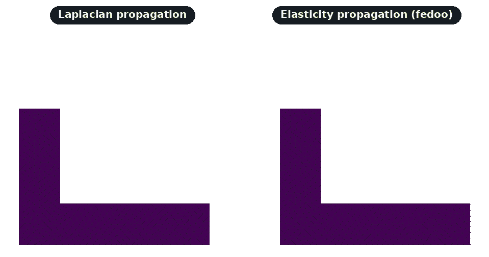

Lagrangian Motion¶
This page documents the Lagrangian mesh motion functions in the mmgpy.lagrangian module and the dataset.mmg.move(...) accessor method.
Overview¶
Lagrangian remeshing handles moving meshes by:
- Applying a displacement field to the mesh
- Remeshing to maintain quality
- Preserving boundary conditions
This is useful for:
- Moving mesh simulations
- Shape optimization
- Fluid-structure interaction
- Morphing between shapes
dataset.mmg.move() applies the displacement and remeshes for every mesh kind (TET, 2D, surface) with no external dependency. For interior propagation it ships two solvers: a pure-Python Laplacian smoother (default) and an optional fedoo-backed linear elasticity solver, selectable via propagation_method.
import numpy as np
import pyvista as pv
import mmgpy # noqa: F401 -- registers reader/writer + accessor
sphere = pv.Sphere(theta_resolution=10, phi_resolution=10)
displacement = np.zeros((sphere.n_points, 3))
displacement[:, 0] = 0.1 # Move in x direction
moved = sphere.mmg.move(displacement, hausd=0.01)
Functions¶
move_mesh(
mesh: MmgMesh2D | MmgMesh3D | MmgMeshS | Mesh,
displacement: NDArray[float64],
*,
boundary_mask: NDArray[bool_] | None = None,
propagate: bool = True,
propagation_method: str = "laplacian",
n_steps: int = 1,
**remesh_options: float | bool | None,
) -> None
Move mesh vertices by displacement and remesh to maintain quality.
For large displacements, consider using multiple steps (n_steps > 1)
to avoid mesh inversion.
Parameters¶
mesh : Mesh or MmgMesh2D or MmgMesh3D or MmgMeshS
The mesh to deform in place.
displacement : ndarray
Nxdim array of displacement vectors for each vertex. If
boundary_mask is provided and propagate=True, only
boundary values need to be correct; interior values will be
computed.
boundary_mask : ndarray of bool, optional
Boolean array indicating which vertices have prescribed
displacement. If None, all vertices are treated as having
prescribed displacement (no propagation needed).
propagate : bool
If True and boundary_mask is provided, propagate boundary
displacement to interior using the chosen propagation_method.
propagation_method : str
Method for propagating boundary displacements to the interior.
Options:
- ``"laplacian"`` (default): Solves the Laplace equation. Fast,
no extra dependencies.
- ``"elasticity"``: Solves a linear elasticity problem using
`fedoo <https://github.com/3MAH/fedoo>`_. Produces physically
meaningful displacements, better for large deformations and
complex geometries. Requires ``pip install fedoo``.
n_steps : int
Number of incremental steps to apply the displacement. Use more
steps for large displacements to avoid mesh inversion.
**remesh_options
Options passed to mesh.remesh() (hmax, hmin, etc.).
Raises¶
ValueError
If displacement dimensions don't match the mesh, or
propagation_method is not recognized.
options: show_root_heading: true
propagate_displacement(
vertices: NDArray[float64],
elements: NDArray[int32],
boundary_mask: NDArray[bool_],
boundary_displacement: NDArray[float64],
) -> NDArray[np.float64]
Propagate displacement from boundary to interior using Laplacian smoothing.
Solves the Laplace equation nabla^2 u = 0 with Dirichlet boundary conditions u = boundary_displacement on the boundary. This produces a smooth displacement field that transitions from boundary values to interior.
The complexity is O(n) for building the matrix and typically O(n^1.5) for solving due to the sparse structure.
Parameters¶
vertices : ndarray
Nx2 or Nx3 array of vertex coordinates.
elements : ndarray
Mx(nodes_per_element) array of element connectivity.
boundary_mask : ndarray of bool
N boolean array, True for vertices with prescribed displacement.
boundary_displacement : ndarray
Nxdim array of displacement vectors. Only values at boundary
vertices (where boundary_mask is True) are used.
Returns¶
ndarray Nxdim array of displacement for all vertices.
Raises¶
ValueError If array dimensions don't match.
options: show_root_heading: true
propagate_displacement_elasticity(
vertices: NDArray[float64],
elements: NDArray[int32],
boundary_mask: NDArray[bool_],
boundary_displacement: NDArray[float64],
*,
youngs_modulus: float = 1000000.0,
nu: float = 0.3,
) -> NDArray[np.float64]
Propagate displacement from boundary to interior using linear elasticity.
Solves a fictitious linear elasticity problem with prescribed displacements
on the vertices flagged in boundary_mask; vertices outside the mask are
free DOFs whose displacement is computed by the elasticity solve. This
produces a physically meaningful smooth field, superior to Laplacian
smoothing for large deformations and complex geometries.
Requires the fedoo package (optional dependency).
Parameters¶
vertices : ndarray
Nx2 or Nx3 array of vertex coordinates.
elements : ndarray
Mx(nodes_per_element) array of element connectivity.
boundary_mask : ndarray of bool
N boolean array, True for vertices with prescribed displacement.
boundary_displacement : ndarray
Nxdim array of displacement vectors. Only values at boundary
vertices (where boundary_mask is True) are used.
youngs_modulus : float
Young's modulus for the fictitious elastic material. With only
Dirichlet BCs (no body forces, no tractions) the displacement
field is independent of this value; only nu affects the result.
Default 1e6.
nu : float
Poisson's ratio. Default is 0.3.
Returns¶
ndarray Nxdim array of displacement for all vertices.
Raises¶
ValueError If array dimensions don't match or the element type is unsupported.
options: show_root_heading: true
Detect boundary vertices in a mesh.
Boundary vertices are those that lie on the exterior surface of the mesh. For 3D meshes, these are vertices on surface triangles. For 2D/surface meshes, these are vertices on boundary edges.
Parameters¶
mesh : Mesh or MmgMesh2D or MmgMesh3D or MmgMeshS The mesh whose boundary vertices to detect.
Returns¶
ndarray of bool
Boolean array of length n_vertices, True for boundary
vertices.
options: show_root_heading: true
propagate_displacement_elasticity requires the optional
fedoo backend (pip install "mmgpy[fem]").
On a cantilever bracket the Laplacian solver pivots the geometry rigidly
while the elasticity solver captures the bending kinematics:


See the Elasticity Propagation tutorial for a full walkthrough.
fedoo on conda-forge
fedoo is published on PyPI but not on conda-forge. If you installed mmgpy
from conda-forge, install fedoo separately with
pip install fedoo (or conda install -c set3MAH fedoo) inside the same
environment to enable elasticity propagation.
Deprecated: remesh_lagrangian
Mesh.remesh_lagrangian(), dataset.mmg.remesh_lagrangian() and
mmgpy.progress.remesh_mesh_lagrangian() are kept as deprecation shims
that forward to mmgpy.move_mesh / dataset.mmg.move. They emit a
DeprecationWarning and will be removed in a future release; new code
should call the move/move_mesh API directly.
Accessor Method¶
import numpy as np
import pyvista as pv
import mmgpy # noqa: F401
mesh = pv.read("input.mesh")
# Define displacement field (3D vector at each vertex)
displacement = np.zeros((mesh.n_points, 3))
displacement[:, 0] = 0.1
moved = mesh.mmg.move(displacement)
Usage Examples¶
Basic Lagrangian Remeshing¶
import numpy as np
import pyvista as pv
import mmgpy # noqa: F401
mesh = pv.read("input.mesh")
vertices = np.asarray(mesh.points)
# Create displacement: radial expansion
center = vertices.mean(axis=0)
directions = vertices - center
distances = np.linalg.norm(directions, axis=1, keepdims=True)
directions = directions / (distances + 1e-10)
displacement = directions * 0.1 * distances
remeshed = mesh.mmg.move(displacement)
print(f"Cells: {mesh.n_cells} -> {remeshed.n_cells}")
Boundary-Only Displacement¶
Move only boundary vertices and let move() propagate the displacement into the interior. PyVista's extract_surface gives the boundary vertex set for any mesh kind:
import numpy as np
import pyvista as pv
import mmgpy # noqa: F401
mesh = pv.read("input.mesh")
surface = mesh.extract_surface()
boundary_mask = np.zeros(mesh.n_points, dtype=bool)
boundary_mask[surface.point_data["vtkOriginalPointIds"]] = True
displacement = np.zeros((mesh.n_points, 3))
displacement[boundary_mask, 2] = 0.05
moved = mesh.mmg.move(
displacement,
boundary_mask=boundary_mask,
propagate=True,
hmax=0.1,
)
Iterative Motion¶
For large deformations, use multiple sub-steps via the n_steps argument:
With Quality Control¶
Combine with remeshing parameters:
Complete Example¶
Deform a sphere into an ellipsoid:
import numpy as np
import pyvista as pv
import mmgpy # noqa: F401
mesh = pv.read("sphere.mesh")
vertices = np.asarray(mesh.points)
# Compute displacement: stretch in z, compress in x and y
center = vertices.mean(axis=0)
relative = vertices - center
scale = np.array([0.7, 0.7, 1.5]) # Compress x,y, stretch z
displacement = (center + relative * scale) - vertices
remeshed = mesh.mmg.move(displacement, hmax=0.1, verbose=1)
q = remeshed.mmg.element_qualities()
print(f"Vertices: {mesh.n_points} -> {remeshed.n_points}")
print(f"Mean quality: {q.mean():.3f}")
remeshed.save("ellipsoid.vtk")
Tips¶
- Small steps: For large deformations, pass
n_steps > 1todataset.mmg.move(...). - Quality monitoring: Check
dataset.mmg.element_qualities()after each step. - Boundary handling: Use
boundary_mask+propagate=Truefor interior smoothness. - Remesh parameters: Combine with
hmax,hausdfor size control. - Validation: Validate the mesh between steps with
dataset.mmg.validate().